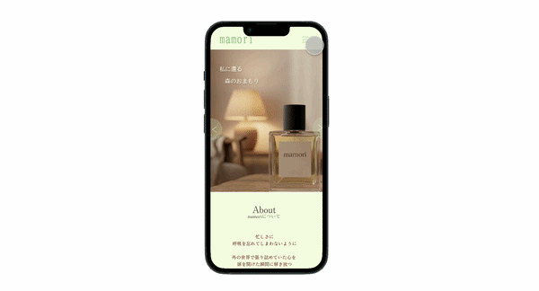

操作画面(PC用)のプレビューです

・マウスを置いたときにボタンの色が変わるなど、『押せること』が直感的に伝わるデザインのバリエーションを作成しました。
・ボタンをクリックすると、ページ内の特定の場所や上部へ瞬時に移動する動作（シミュレーション）を設定しました。
操作画面(携帯用)のプレビューです

・スマホ使用時に操作のしやすいボタンの高さや、文字サイズを意識し作成しました。
・画面をすっきり見せるため、クリックするとメニューが飛び出す折りたたみ式のナビゲーション（三本線のアイコン）を導入しました。